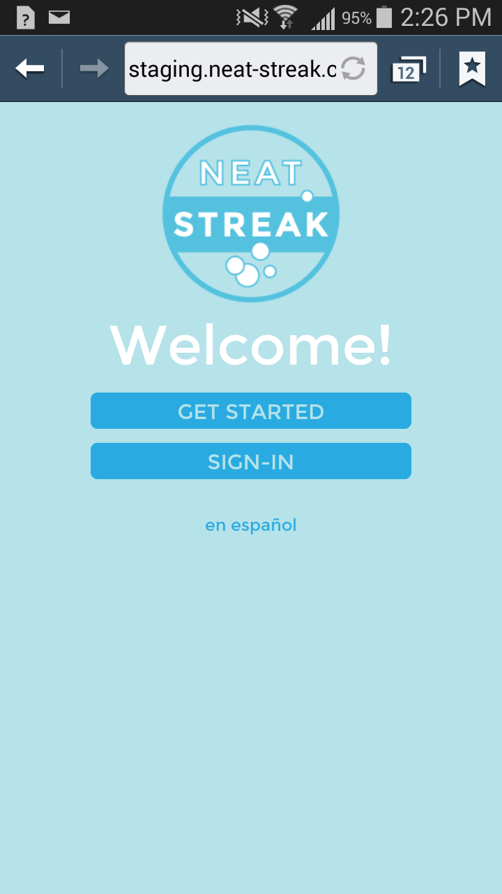
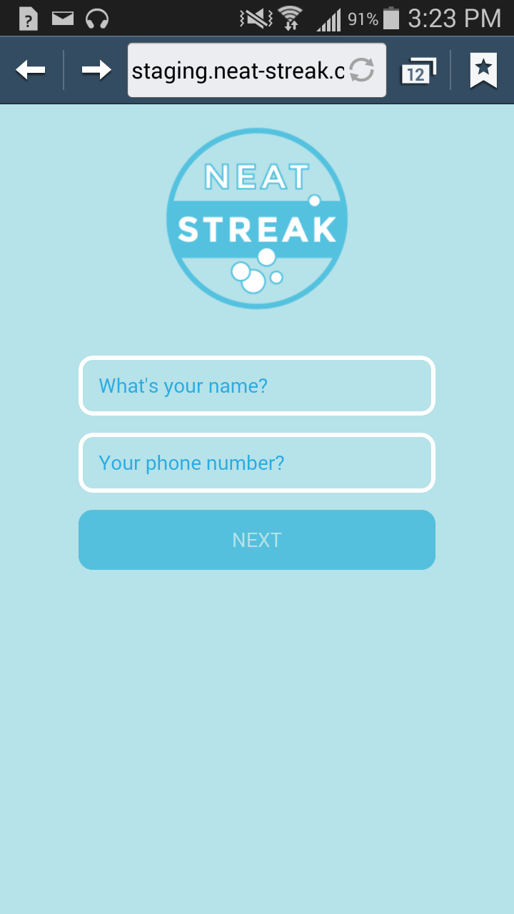
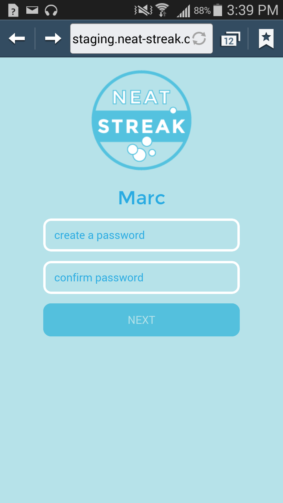
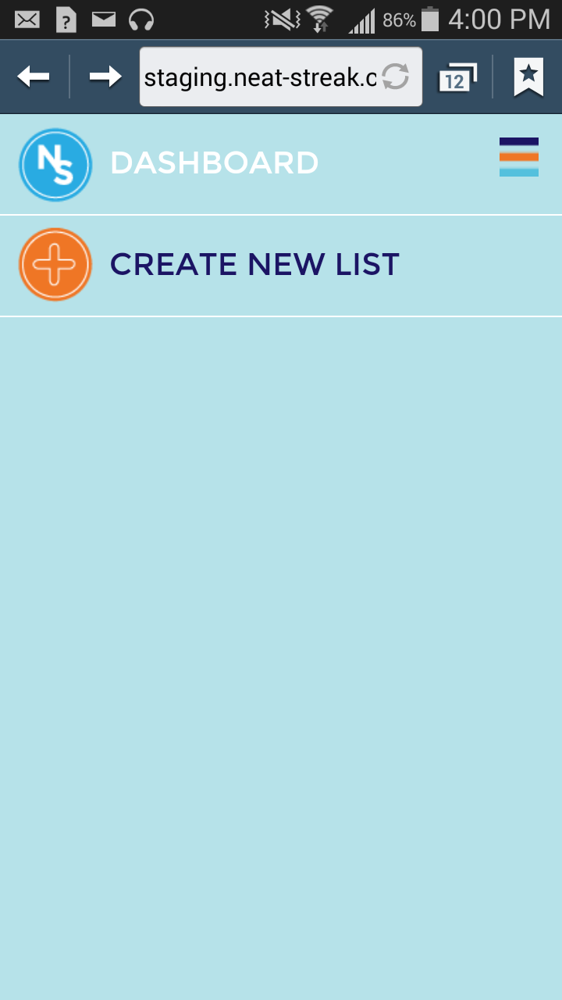

Open this link on your mobile phone or type in http://neat-streak.com/ on your phone's web browser.
You will see the following screen:

Create a NeatStreak account
Touch "en español" to browse in Spanish. Or, touch the Get Started button.
You will see the account creation screen

Type your name into the "What's your name" box
Type your phone number into the "Your phone number" box
Hit the Next button
You will be directed to the following screen

Type a password into the "create a password" box
Type the same password into the "confirm password" box
Hit the Next button
You now have a NeatStreak account
You will receive a text message welcoming you to NeatStreak
The dashboard contains the cleaning lists for all your clients.
If you have just created an account, there will be no existing lists.

To create a new list, hit the Create New List item in the dashboard